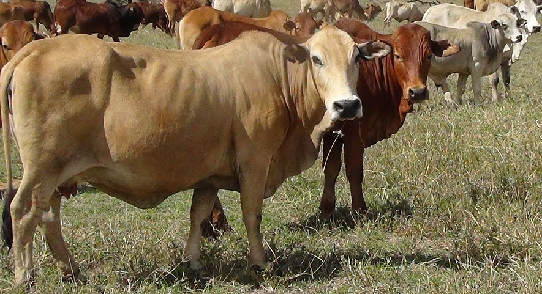
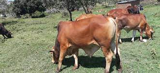

|
Cattle
|
|
Boran

The Boran developed in eastern Africa, more specifically the Borana plateau in southern Ethiopia. This area was where all the different breeds migrated through to their various destinations in Africa. The Boran developed into the dominant breed of eastern Africa and especially in Kenya, where the Kenyan Boran Cattle Breeders' Society (BCBS) have bred the "Improved Boran" since the turn of the century. Charateristics The Boran is medium in size with a short head, small ears, loose dewlap and a large hump above the shoulders. They can be horned or polled. They vary in height from 114cm to 147cm tall, and in weight bulls weigh approximately 500kg to 850kg. Cows weigh about 380kg to 450kg Their skin is loose, thick and extremely pliable for added insect repellence plus it is dark pigmented with fine short hair for heat tolerance. Hair colour can be a range of colours except brindle or solid black. The Boran male and female share breed points, the sexes, however, show marked dimorphism - the female being notably small, whilst the male grows to a large size. The cow has a well-carried udder with strong attachments and neat, small teats, in contrast to some Asian Zebu breeds. Boran heifers reach puberty at an average age of 385 days. She is an excellent mother, not only will she feed her calf so well that high weaning weights are attainable, but she guards against predators, and will never allow her calf to get lost in the bush. Calving problems hardly exist. Calves at birth weigh an average of 28 kg for males and females, 25 kg. Boran cattle have developed adaptive traits of crucial importance for their survival. Some of these characters are:-
Statistics
Sahiwal  Sahiwal cattle are indigenous to Pakistan and India, and were imported to Kenya in 1930s and 1940s. The breed has been developed as a dual-purpose breed and is utilised in smallholder farming systems, beef and dairy ranching in marginal areas of Kenya which form 80% of the country. Conservation efforts include keeping of Sahiwal herds on state farms, individual ranches and the establishment of the Sahiwal semen bank at the Central Artificial Insemination Station at Kabete near Nairobi. Breeding of the Sahiwal has been promoted by the formation of the Sahiwal Breeders Society which has established breed standards for registration of Sahiwal cattle with the Kenya Stud Book. Characteristics Their colour can range from reddish brown through to the more predominant red, with varying amounts of white on the neck, and the underline. In males the colour darkens towards the extremities, such as the head, legs and tail. It is tick-resistant, heat-tolerant and noted for its high resistance to parasites, both internal and external. Cows average 2270kg of milk during a lactation while suckling a calf and much higher milk yields have been recorded. They are generally docile and lethargic, making them more useful for slow work. The Sahiwal is the heaviest milker of all Zebu breeds and display a well developed udder. Sahiwals demonstrate the ability to sire small, fast-growing calves and are noted for their hardiness under unfavorable climatic conditions. Features
|